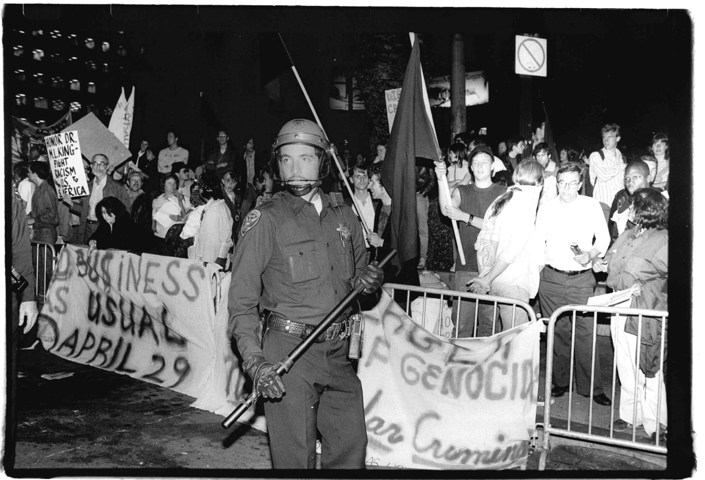
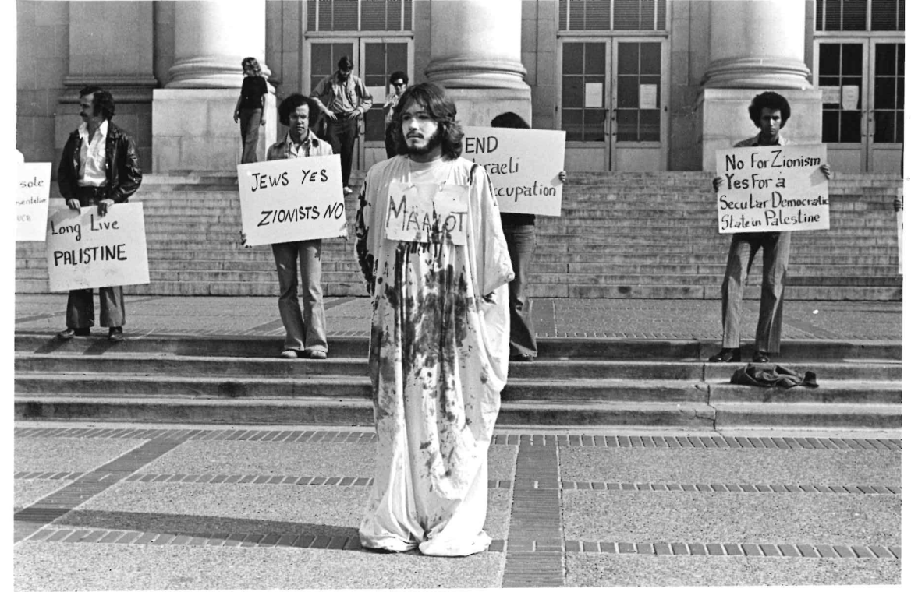

_Bancroft Library_courtesy.jpg)
For 60 years, UC Berkeley has fought the same battle. For 60 years, the administration has fallen short. For 60 years, the revolution has failed to manifest. Berkeley is not as it was in the ’60s; Berkeley is exactly as it was in the ’60s.
Only now, Sproul Plaza is quieter. What few protests have graced it in the last year have at most numbered 300 students. They consist of, for the most part, participants listening to a scheduled lecture on the Mario Savio steps, named after one of the leaders of the Free Speech Movement. Even as the controversies surrounding campus and the University of California’s administration have mounted, granting seemingly an ever-greater reason to protest, Berkeley’s famous body of radicals seems tamed.
“I don’t know what good anything does anymore,” said one of those radicals, Lynne Hollander Savio, a Free Speech Movement member and widow of the late Mario Savio. “I really feel downhearted and depressed. But you can’t act on that.”
When campus suspended lecturer Peyrin Kao for pro-Palestinian remarks in the classroom, Lynne Hollander Savio and members of the Board of the Free Speech Movement Archives — a group of FSM members and affiliates dedicated to the preservation of the movement’s history — both wrote to campus leadership. Savio, in her letter, beseeched UC Berkeley Chancellor Richard Lyons to avoid returning to the “shameful history” the FSM hoped to have left behind.
In conversation, however, Savio and a number of other former FSM members painted a much broader picture of their dismay with the UC Berkeley of today — in which the once riotous student body has gone quiet.
“I’m waiting to hear when the Cal student body will stand up,” said FSM Archives Board President Jack Radey. “It’s a very different student body these days.”
Radey is a revolutionary through and through. He told me in an email that he dropped out after the FSM, “having gotten a terrific education ... all taught by experts in the field, all labs — at rallies, meetings, work sessions.” He is the founder of People’s War Games and has spent his life crafting simulations of Soviet battles, among other things.
Savio, a former librarian, is leading a quiet life in Sebastopol. She will not attend protests where either the Palestinian or Israeli flag flies alone. She dreams of a world where they fly side by side. She is a nice lady and a purist.
Despite their differences, Savio and Radey are of a single type. They share many criticisms of today’s campus protests: They are ineffective albeit suppressed. They both see a generation of broken communication — kids are on their phones too much.
Savio said the image of the FSM’s sit-ins in some ways misled later organizers. The myth of the movement failed to preserve the weeks of flyering and outreach behind every action. That outreach extended to all of campus, including more conservative organizations. Today’s progressive organizers do not work with the College Republicans. Inspiring its actions, FSM members say they had the Civil Rights Movement as their example. Today’s organizers have no new heroes — only old symbols.
Radey — who likes to talk in military terms — said it is a matter of strategy. He told a compelling narrative of the decline of the radical American left, from the principled disobedience of the Civil Rights Movement to the furious but ill-conceived Occupy Wall Street movement and its inspiration of the pro-Palestine encampments of 2024.
“The problem with encampments is that they face inwards, they don’t face outwards,” Radey said. “Occupation has a shelf life. You can do it effectively for a brief period. After that, you’re all focused on yourself, and you’re not reaching out to the bigger community.”
Tents on Sproul, he said, did not meaningfully disrupt the machinery of the campus.
_Maxine Eschger_ss.jpg)
The encampment, which covered Sproul Plaza in spring 2024, still looms over campus. The movement won a promise from former Chancellor Carol Christ that campus would consider divesting its endowment from companies profiting from genocide in Gaza. While the encampment may have helped turn the tide of public opinion, divestment never came.
What did was a slew of actions by state legislators, the university and campus administrators which tightened enforcement of campus Time, Place and Manner, or TPM, regulations. In the continuing aftermath, campus protest has fallen into a lull.
There are a host of explanations for this quiet spell. According to New York University professor Robert Cohen, a Berkeley alum of the anti-Apartheid era and an FSM Archives Board member, the federal government has exerted a degree of force to quiet student voices unprecedented even in the McCarthy era.
“Once you chill the atmosphere on free speech on one issue, it has a kind of a broader impact,” Cohen said. “If you go back to the ’50s, they called students back then the silent generation because students were afraid to sign petitions or join political organizations, because they were afraid they would get blacklisted as communists.”
Amid the UC system’s openness to diplomacy with President Donald Trump in the face of his pressure campaign, Cohen and Savio both see a generation stunted.
For campus’s part, it maintained that it has neither the desire nor ability to quell freedom of speech on campus. Spokesperson Dan Mogulof stated in an email that campus’s TPM regulations did not change after the encampments, except for codifying a ban against masks while breaking policy or the law. This is already illegal in California.
“TPM rules are established and implemented in order to protect the rights of all,” Mogulof said in an email. “We have now the very same TPM rules in place that we have had for many years, the very same rules that have protected and supported Free Speech on campus.”
Savio, however, said students now face a campus administration even more adept and willing to squash protests than she did.
“I mean, Clark Kerr was a liberal for God’s sake,” Savio added. “Everything was much more civil.”
Radey offered another point to consider: It is harder to pay for college now than it was in the ’60s, and harder yet to be a freedom fighter.
“I certainly came to Cal with the feeling that the highest duty of a patriotic American was to be part of that movement,” he said. “Students now — carrying a huge load of debt and needing to fight for their grades in order to have a chance for a job that might, sometime, maybe by the time they’re 50, allow them to buy a house — don’t have the space, the time or the orientation to act as patriotic Americans.”

Some student organizers, however, seem to have come awake in recent months. At a March 5 meeting, the Young Democratic Socialists of America at UC Berkeley, who organize for almost every cause on campus, talked about “How to build a successful campaign.”
They are working to build groups in departments around campus, at first predicated on shared academic struggle, and then eventually shared class struggle.
One of their organizers, Ruhan Katre, said later that he would agree with the criticism from the old guard. He sounded vindicated.
“A lot of the actions and the strategy has been ineffective and that’s something that YDSA this semester … has kind of had to reckon with,” Katre said.
The encampments at UC Berkeley were “incredibly insular,” Katre said, “There was nothing that came of it, but at SFSU they won.”
The San Francisco State University divestment negotiations happened in the open air, not sealed up in the halls of administration. According to Katre, activists there dedicated time to spreading the good word outside of the encampment.
Since then, Katre points to an apathetic student body, the constant weight of getting a job and tightened TPM enforcement as hampering their movement. He acknowledged that the previous strategy of campus organizing, which saw a few dozen students repeatedly imposing upon the public space of Sproul, accomplished little.
YDSA and other organizations are trying to reorder themselves now. Oton De Souza, an organizer at UC Berkeley School of Law involved in a number of campus groups, told me organizations are trying to build a broader base. They are fighting the student body’s widespread apathy through education. De Souza conceded that the encampment was too insular, that leadership in the revolution-to-be cannot outpace its members in the race of progressivism.
It is a hard battle but he remains hopeful. “I have to be,” he said. “The alternative is barbarism.”
Still, there are the same revolutionary minds today. The movement needs “its cadres with people who are really going to hold the ground,” de Souza said. They are militant and paranoid, desperate to be against great odds. Requests for anonymity are standard today for protesters in broad daylight. They distrust the media.
And there may well be great odds. De Souza described “a direct sort of chilling effect” from what organizers see as a crackdown on campus protest.
Mogulof pushed back, saying that “not a single individual has been—or will be— prevented from, or punished for, participating in any form of expression that complies with (TPM) rules and criminal laws.”
Something, anyhow, is in the air.

“As for the state of campus organizing, I would say on one hand it feels bleak that all the effort that people have been doing has not really worked,” Katre said. “But the way I see it, trying to look at it like glass-half-full, is that we’re still in our infancy and we’re not trying to take shortcuts with it.”
They are in the long middle of the war, in which both noble beginnings and glorious victory seem distant, and in their place is slow time. They are hopeful in the trenches.
As Cohen noted, “things can change really quickly.” He would caution against taking the word of the old guard as fact. By their own admission, Savio and Radey are not on campus the same way students are.
In December 1964, Mario Savio wrote, “the bureaucrats hold history as ended.” It was their belief, in Savio’s mind, that the present and past were good enough, if not perfect. The good fight, for which Berkeley is endlessly home, would keep going until the administration was convinced of the possibility of a better future, of the reality of this imperfect present.
That history is still present in Berkeley. As Lynn Hollander Savio said, “We won the battle. We didn’t win the war.”
In our conversation, Savio referred to a lyric in an old civil rights song:
“Freedom is a constant struggle.”